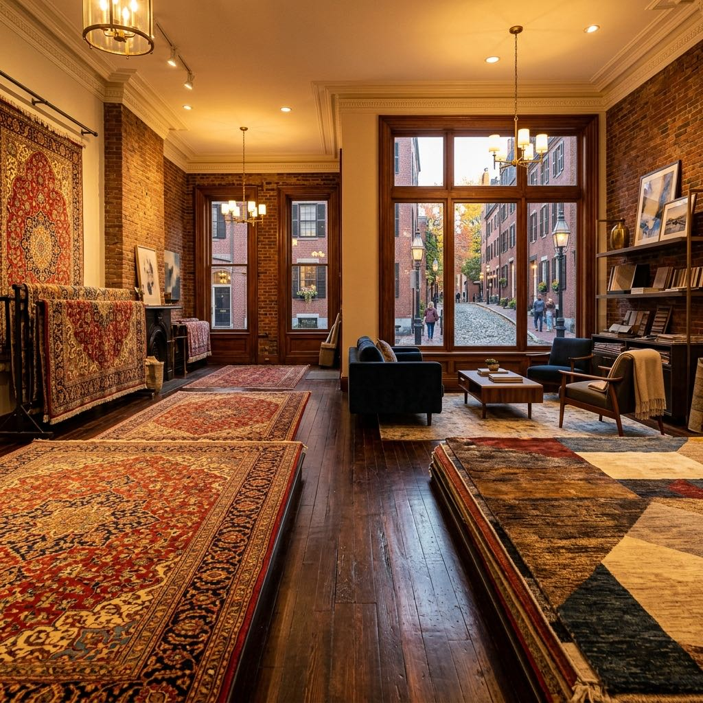
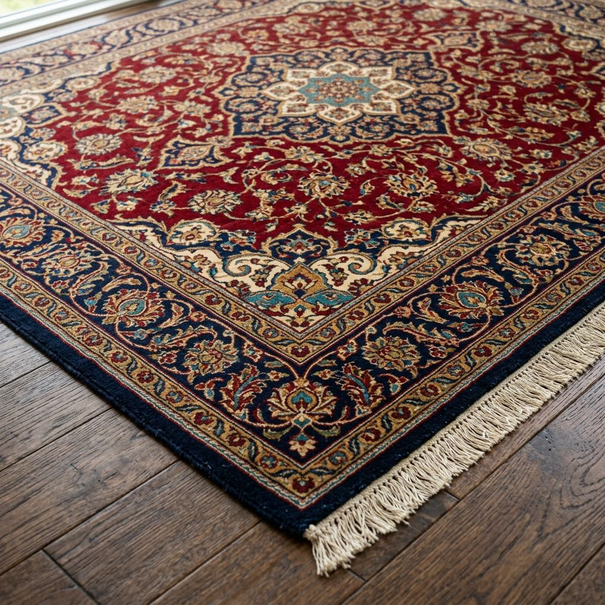
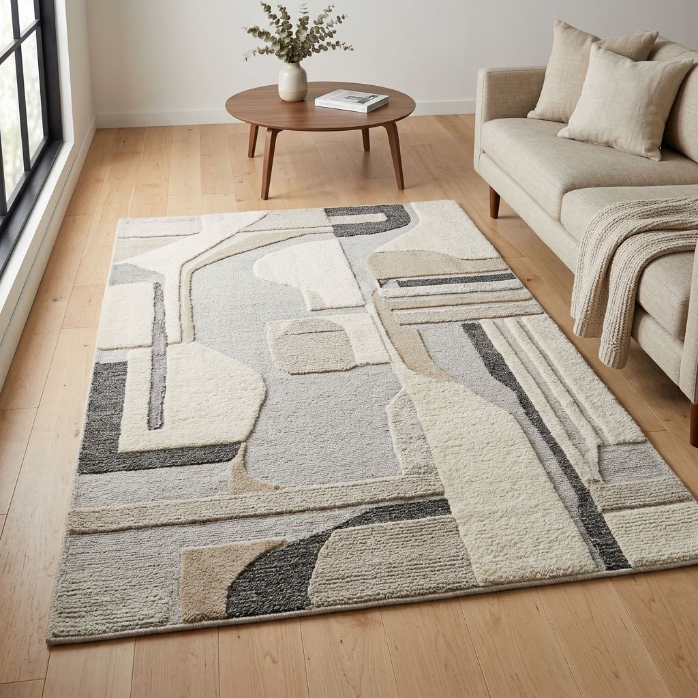
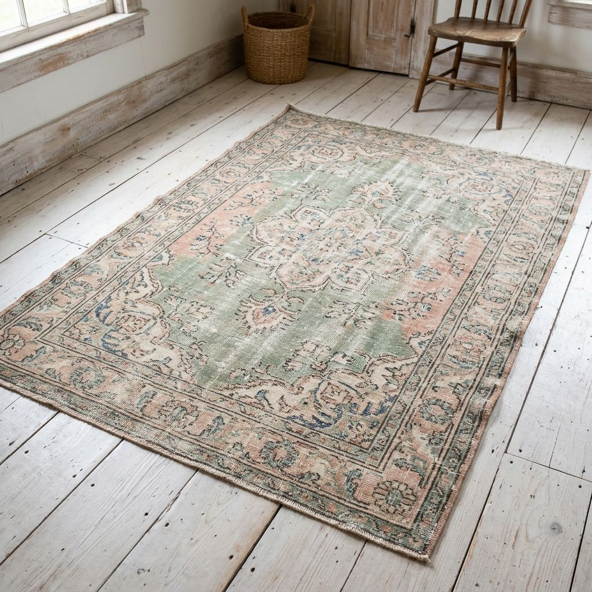

Museum-Quality Conservation and Master Craftsmanship
Led by Harvard Law alumnus and master weaver Mo Nooraee. Restoring and preserving fine hand-knotted rugs since 1979 using traditional methods, handspun wool, and organic dyes.
For over three hundred years, the Nooraee family has transmitted the precious heritage of weaving Persian rugs from generation to generation. Today, founder, Harvard Law alumnus, and president Mo Nooraee continues that legacy as a master weaver and one of the nation's foremost certified appraisers and restorers of fine hand-knotted rugs.
We respect the pedigree of hand-made rugs woven from natural fibers, handspun wool, and non-synthetic, color-fast dyes.
Himself a master weaver, Mr. Nooraee ensures that every rug is treated with the highest level of care using time-honored methods.

Discover antique oriental rugs, luxury Persian rugs, and handmade masterpieces tailored for traditional and contemporary Boston interiors.

Intricate, high-knot-density Persian and Oriental designs. Deep crimson, rich navy, and antique gold tones that command presence in historic brick townhouses.

Abstract geometric and painterly patterns featuring high-low textures. Soft neutral hues, creams, and cool slate tones ideal for open-concept waterfront lofts.

Authentic antique rugs gently washed, sheared, and sun-faded or overdyed. Timeless character with a muted, relaxed palette that integrates into any design era.
A photo can't show how a handmade rug looks on your floor, in your light, next to your furniture. So we bring it to you. Choose one or more rugs and live with them at home for three days, free of charge. If it isn't right, we take it back.
Service is the foundation of our work ethic. We are proud to serve our neighbors with compassion, craftsmanship, and community through volunteer programs, clothing drives, and charitable partnerships.
Learn More About Our Community ImpactA premium hand-knotted rug is an investment that outlives generations. We provide expert care to preserve its beauty and value.
Traditional hand washed oriental rugs using natural green shampoos and mothproofing solutions. The preferred choice for organic oriental rug cleaning in Boston.
Museum-quality rug restoration and repair of antique oriental rugs using time-honored traditional methods, matching handspun wool, and organic dyes.
Certified rug appraisal for insurance, estate valuation, or tax deductions. Mo Nooraee provides certified evaluations and handles IRS Form 8283 details.
Hear from homeowners, interior designers, and collectors throughout the historic estates of Greater Boston.
"The restoration work Mohammad did on our family's antique Kashan rug was nothing short of miraculous. You cannot tell where the moth damage was. A museum-quality result."
"As an interior designer, I only trust Noor for organic washing and restorations. Their attention to detail and traditional vegetable dye matching is unmatched in New England."
"We donated three heirloom carpets to a silent auction charity. Mohammad did the appraisals and completed the IRS Form 8283 details flawlessly. Exceptionally professional service."
We welcome architects, interior designers, and homeowners for private showings. Fill out the form to schedule a cleaning, restoration, or private consultation.
769 Concord Ave, Cambridge, MA 02138
(617) 868-6667
Tue, Wed, Fri, Sat: 8:00 AM – 3:00 PM
Mon, Thu, Sun: Closed
Cambridge, Boston, Brookline, Newton, Belmont, Lexington, Wellesley, and Greater Boston suburbs.